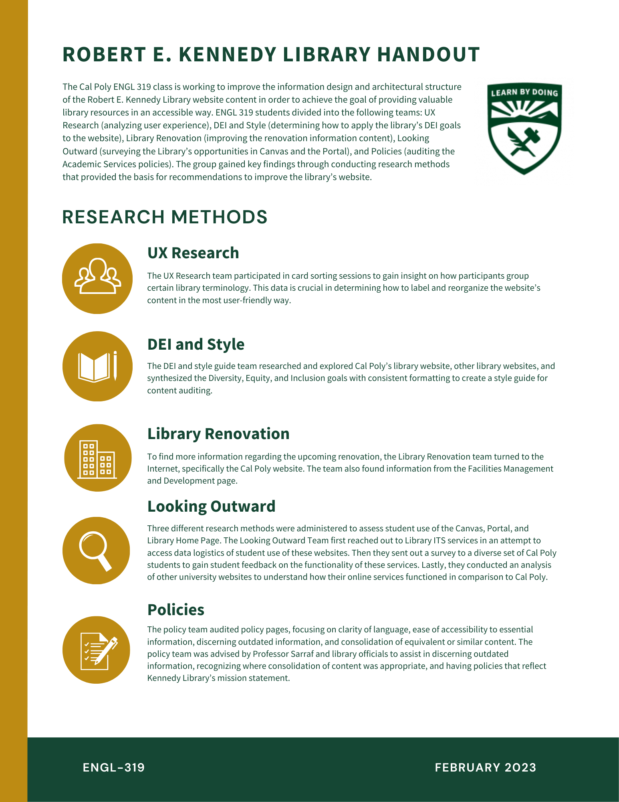
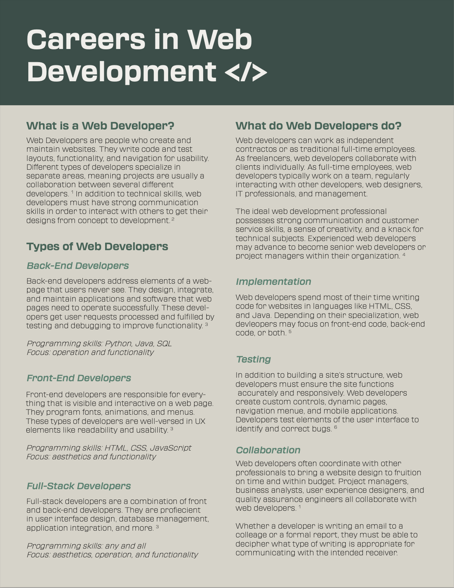

Technical Writing
Table of Contents:
- iFixit Mini Fan Guide
- LAES Website
- Content Strategy Audit for the Cal Poly Library
- Web Developer Career Fact Sheet
- Franchise Brochure Redesign
- Cal Poly TPC Program Infographic
- Screen Printing Infographic
iFixit Mini Fan Guide
Created a 6 step guided walkthough for replacing a mini Vornado Fan blade. Process involved an editing phase from a text reviewer at iFixit. I captured and uploaded the images, as well.
Visit the link below to view the complete article on iFixit.
LAES Website
Redesigning pages and conducting usability tests for the Liberal Arts and Engineering Studies department's website at Cal Poly SLO. Employed as a LAES department assistant from January 2022 to June 2022.
Used agile and scrum methodologies to complete deliverables and consult with department heads, Dr. David Gillette and Dr. Michael Haungs. Other job tasks included assisting the Empowering Autistic Scholars (EAS) Program director.
Visit the link below to view the site.
Content Strategy Audit for the Cal Poly Library
1-page audit summarizing the findings of the Robert E. Kennedy Library content audit. This audit was collaboratively executed for the Information Design and Production course at Cal Poly.


Web Developer Career Fact Sheet
1-page career fact sheet about web developers for the Introduction to Technical and Professional Communication course at Cal Poly. Contains basic information about different types of web developers and what a person in this role might be responsible for.

Franchise Brochure Redesign
Information redesign for Mama's Meatball restaurant in San Luis Obispo. This project was completed for the Information Design and Production course at Cal Poly.


TPC Program Infographic
Infographic for the Cal Poly Technical and Professional Communication Program. Used in emails and advertisements to bring awareness to program details.
Screen Printing Infographic
Infographic about the screen printing process for the Technical Writing for Engineers course at Cal Poly.